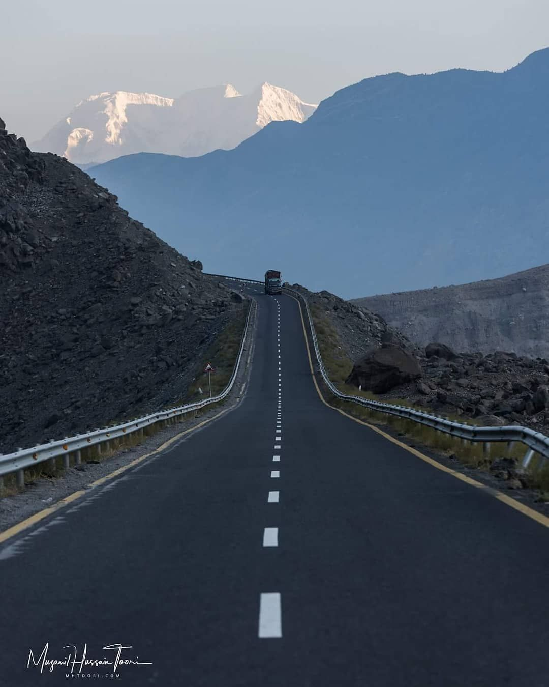
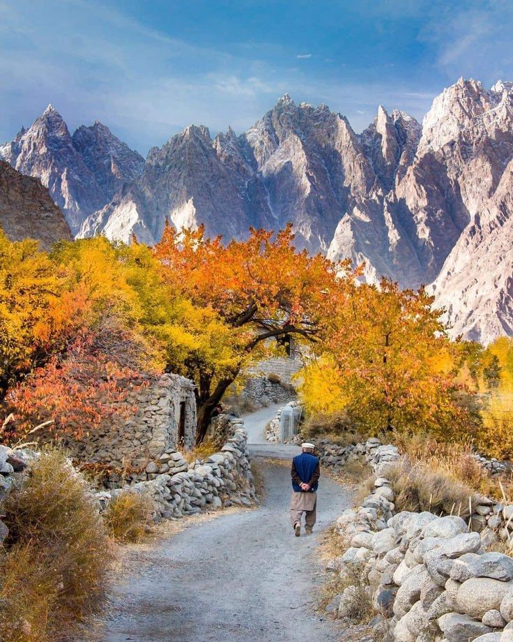
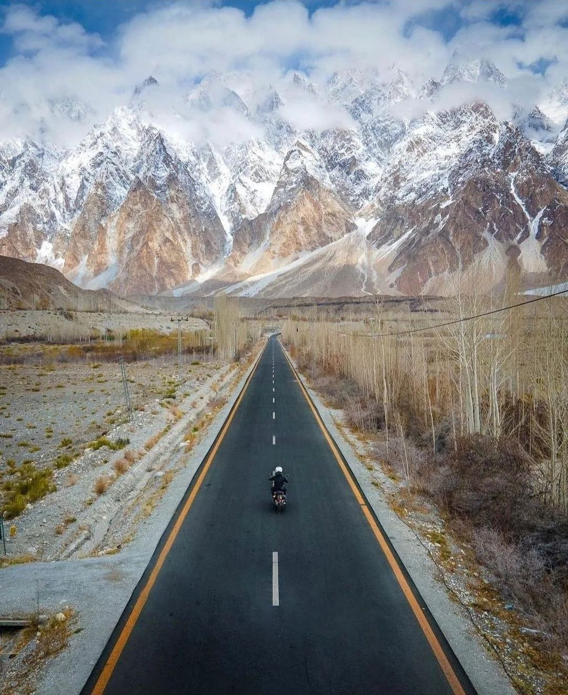

Mountain Scale
High peaks create an unusually dramatic relationship between settlement and landscape.

GILGIT-BALTISTAN · PAKISTAN
A valley suspended between stone, sky and the Karakoram.
Explore the destination ↓Hunza is less a destination than a change of scale — where villages become tiny marks beneath immense Karakoram walls.
At approximately 2,438 metres, Hunza unfolds along the Hunza River in Gilgit-Baltistan, surrounded by some of the most dramatic mountain scenery in Pakistan.
The valley brings together terraced orchards, historic settlements, mountain architecture and the long visual rhythm of the Karakoram Highway. Karimabad forms a natural cultural centre, while Upper Hunza opens toward Gulmit, Passu and the Chinese border.
The experience is deliberately unhurried: stone forts above old villages, turquoise water at Attabad Lake, orchard-lined roads and huge peaks appearing between everyday scenes. It is a place to look closely as much as a place to look far.
Coordinates and elevation are presented as approximate destination-centre figures. Seasonal conditions and road access should be confirmed before departure.
Baltit and Altit frame Hunza's living architectural heritage.
Attabad Lake adds an intense blue note to the mountain palette.
The journey itself becomes part of the destination.
Passu, Gulmit and surrounding settlements reveal a slower rhythm.
Use your own destination photography in the gallery assets below. The layout is intentionally asymmetric to feel closer to a printed travel monograph than a conventional carousel.



Replace this panel with a muted, looping destination video for a cinematic opening.
Four details that give the journey its distinctive sense of place.
High peaks create an unusually dramatic relationship between settlement and landscape.
Historic forts and old villages remain part of an inhabited cultural landscape.
Glacial landscapes, rivers and Attabad's blue water contrast with dry mountain textures.
Spring blossoms and autumn foliage transform the valley's visual character.
One itinerary, several landscapes — from Skardu's high country to Hunza's river valley.
The supplied tour programme is a 10-day northern journey and lists a broad route rather than a single-venue stay.
The supplied tour begins from Islamabad for the listed per-head package. The programme also lists Karachi–Islamabad transport options separately.
Spring is known for blossom, summer for open mountain travel and trekking, and autumn for golden foliage. Weather, road conditions and access to higher passes can change quickly.
The supplied checklist recommends warm layers, rain protection, gloves, woollen socks, a cap, sunglasses, water, durable footwear, a torch, power bank, charger, moisturiser, lip balm, insect repellent, tissues and basic personal first-aid medicines.
An advance of Rs10,000 per head is stated in the supplied booking procedure. The supplied cancellation policy states: 50% deduction at 7 days before departure, 75% at 3 days, and 100% for less than 3 days.
Published rates from the supplied tour page. Confirm the final fare before payment because transport and fuel prices may fluctuate.
Important: The original page contains both a Rs35,000 headline and a detailed Islamabad–Islamabad table beginning at Rs52,000. This redesign preserves both figures rather than silently changing the published information. Treat the detailed table as the fare schedule to verify with the operator before booking.
“Give the valley a little silence. The most memorable Hunza moments are often between the headline attractions — when the road bends, the orchards open and the mountains suddenly take over the entire frame.”
A slow-travel approach to the Karakoram
Tell us who is travelling and when. Our team can confirm availability, the current package rate and the most suitable transport option.